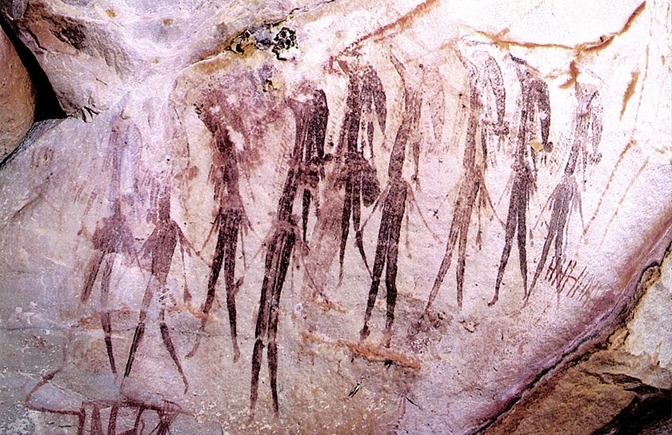
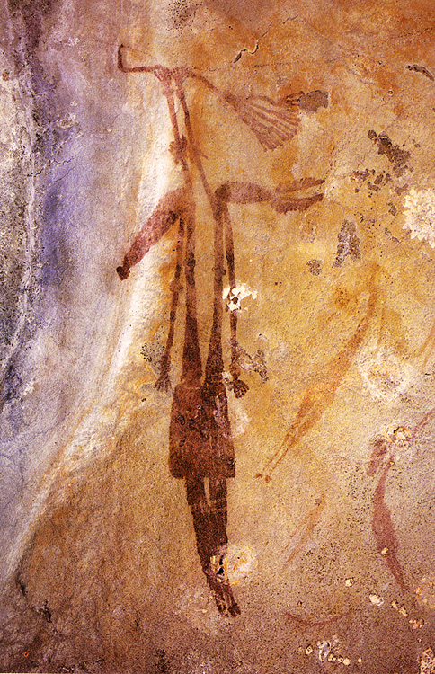
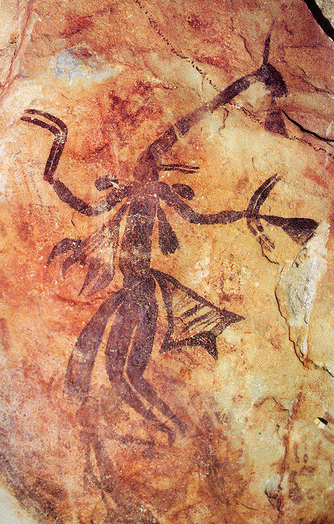
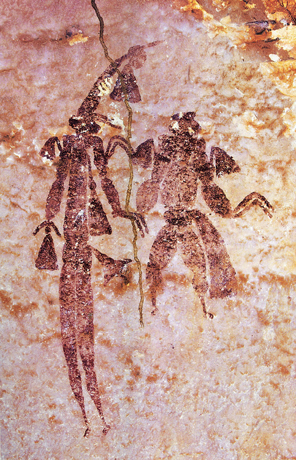
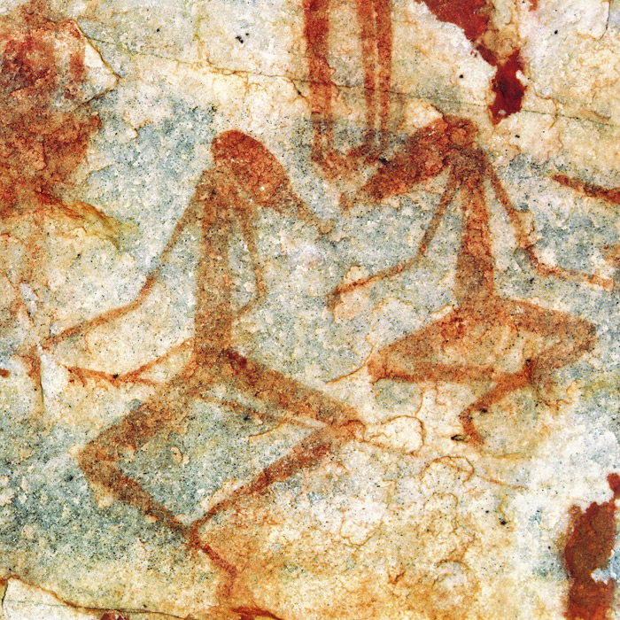
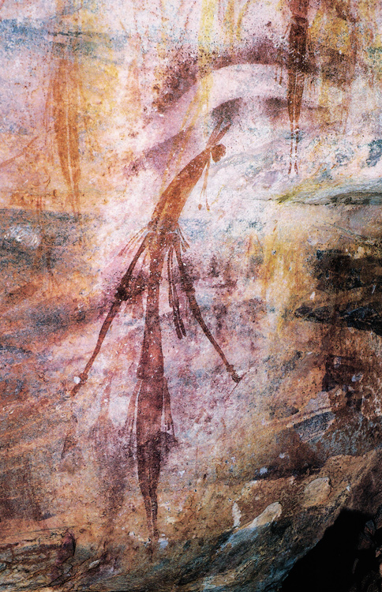
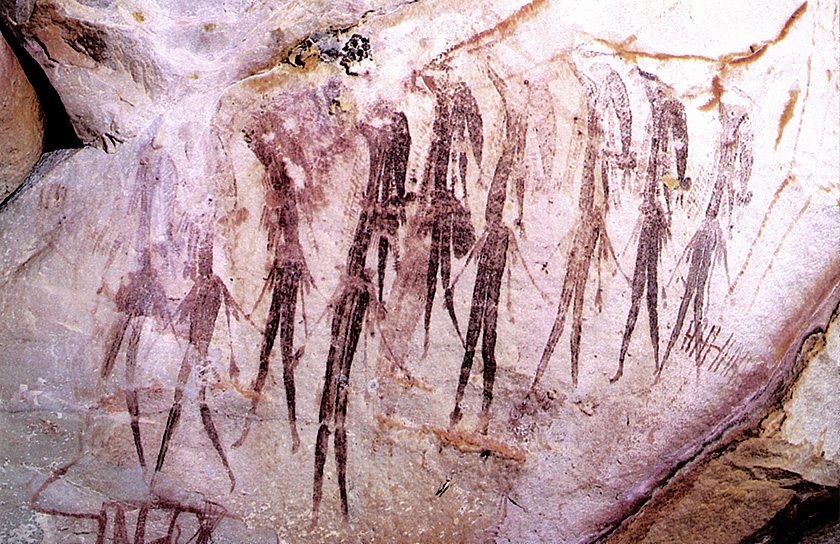
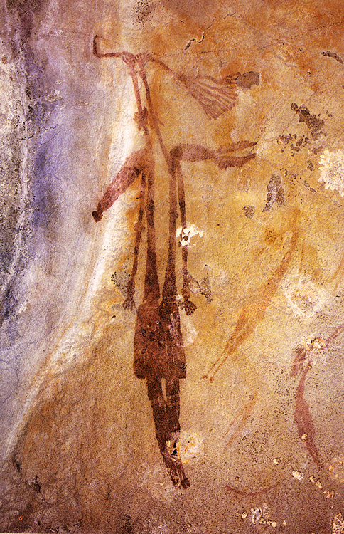
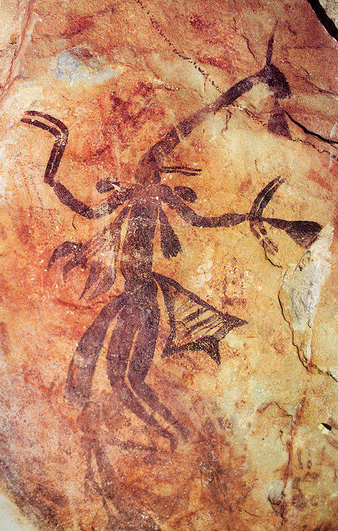
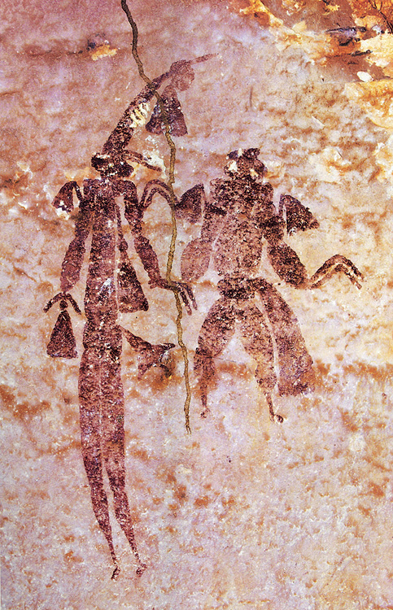
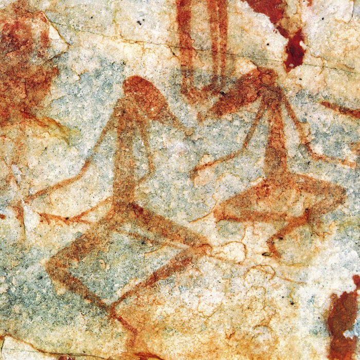
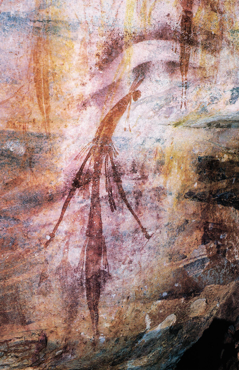
PIGMENTED CAVEWOMAN:
Welcome in my universe.
Silk Gardener, how foolish you sound when trying to rationalize a situation that needs everything but ratio. I am repelled by your hope in this new season, while you refuse to think with a more imaginative approach. You cannot treat rational discourse as a separate act from imaginative discourse. In order to gain knowledge, one must use as much as possible ones capability to imagine. Generally, thinkers who have theorized the functioning of the brain, have put these two extremes, Memoria and Fantasia, in separate compartments.
Yet in the ancient Greek times, myths and theatre plays were written in order to let the audience gain a better understanding of the political and social structures of their own civilization. And hundreds of years later it has been Leonardo da Vinci who very literally visualized this idea, when sketching the brain and drawing different compartments, reason, imagination and memory, that were physically entangled together under the skin. Only recently scientists of cognitive studies have shown the humans that this entanglement in the brain is indeed happening under their skulls.
So siblings, why am I emphasizing this imaginative part, you might wonder? Well I am convinced this cognitive switch is necessary in order to understand the spiritual core in mankind and to actively reunify mankind with natural essence. The natural and the supernatural is inescapably connected. Men’s capacity to make tools and to survive, defines them less than their need to create belief systems. Homo Sapiens is Homo Spiritualis.9
As well as mankind’s urge to create belief systems, also its primal urge to create, is crucial to investigate. A special work that humans have produced needs to be analyzed, in order to tell you more about the unmistaken spirit, which flows in all their bodies.
SILK GARDENER:
Be careful, mother, she will bring up the paintings again.
PIGMENTED CAVEWOMAN:
Exactly, brother. I want to talk about the Gwion Gwion paintings in mid-Australia. The reason I am choosing a work made in the prehistory, is because I think it is possible to understand and reconstruct the primitive mind through the work, when approached correctly. First of all, I will reveal more about the appearance of the cave paintings. Then I will elaborate on how to approach these works.
The Gwion Gwion rocks paintings are to be found in the Kimberley region of Western Australia. Although no man knows for certain, the paintings are estimated to be approximately 15,000 to 20,000 years old. The figures that are depicted are enchantingly different than all other figurations of known cave paintings. More dreamlike silhouettes of people are depicted, all individually painted with ornamental clothes and decorative props. Graceful figures whose curves remind one of calligraphy and who seem to fly on the rough surface of stone. They bring to mind animal-human hybrids, caused by the dendrianthopic ends of their bodies which are resembling an ancient Baobab tree. The connectedness of the Baobab and the Gwion Gwion figures goes further than the visual similarity: just like the Baobab grows steadily skywards for over thousands of years, the painting’s pigment is also growing steadily they remain vividly coloured. Also the baobab tree is often hollowed out by for example fire, and the trunk provides a natural cocoon under which water can be kept fresh for passing humans and animals. Just like the Baobab tree can be seen as the tree of life, nurturing its environment and playing an essential role in their environment, I believe the Gwion Gwion paintings have the ability to nurture their environment. And because of that are playing an essential role for mankind.
Unusual, expressive, elegant. My treasure from earth, my sanctuary, my shelter to understand how every puzzle piece fits together and can collide. When time becomes overtly, cyclic, and events are bound to happen again and again. In endless repetition causing eternal events.
This Paleolithic rock art, when visited, unveils its spiritual flesh. It is breathing, talking, living. And still extremely visible and vividly coloured. As if the spirits of the men who painted them maintains in the mysterious paintings.
SILK GARDENER: At the same time I think it is extremely important to let the people investigate the rock art in a scientific matter. Detailed inventories and diagrams on the way that species are grouped on the cave walls, on their gender, frequency, and position, on their relation to the signs and handprints. Laboratory experiments. It has been these actions which have told humans that physical nature has intervened in these works. Actual fungi had colonized the paint on the rocks.10 The fungi eroded their way into the stone and because of that, they are constantly repainting the surface. It became a self-generative image, that is repainting itself over and over again. Yet this trajectory has only been possible for us to see, sisters, those who transcend space and time.
PIGMENTED CAVEWOMAN:
But here the fundamental question arises: until which extent is this scientific truth about the pigment important, why do these paintings need to be viewed with such a scientific eye? People need to experience the paintings presence: the rock art is demanding it from them. Have you ever heard of the Dreaming?11 A parallel, co-existent world in which ancient ancestors and past, history and future join together, accessible for living people who can cross into it. A shared space with an alternative concept of time, which gives time not a linear motion but a more cyclic motion. Everything that happened in ancient time can be accessed through the Dreaming in the present. The mentality of the primal ages can be discovered and absorbed. I am demanding this imagination. The scientific truth you are referring to will blur the capability to access this mindset.
All humans have is the physical, intact remains of the paintings. They can experience them, and this does not exclude reading and engaging with them. There will not be something to appropriate, there is not something to interpret. There will only be the experience itself. They will discover the magical messages of prehistory, by lacking the desire to know.12
SILK GARDENER:
Yet there must be an overwhelming desire for you to seek meaning beyond the literal images. Find the truth.
PIGMENTED CAVEWOMAN:
That is the crux. I do not.
Indeed, some prehistorians have the ability to find a rather notable pathway which is taking in both scientific and spiritual matter, such as Jean Clottes. He took a leading role in studying the famous primal paintings in the Chauvet Cave in France and was the co-writer of the book the Shamans of Prehistory. He used his scientific studies to comprehend the paintings as spiritual mediators with powers from nature.13 He saw the paintings as a gateway to the metaphysical underworld. Yet he received a lot of negative feedback upon his theory, even researchers of his own team were sceptic. It shows that although spirits and science are thoroughly interwoven, often this is not present in practice. But with an exclusively scientific approach, humans will overwrite the experience itself with only rational knowledge. Both Memoria and Fantasia are necessary to learn them about the spiritual connectedness of cavemen.
CRYSTAL DUSTED WITCH: In theory this can be plausible. But many earthlings are learning to approach artworks in a different, scholarly matter.
PIGMENTED CAVEWOMAN: Indeed, a lot needs to be done before humans can alter the world of the prehistory through the Gwion Gwion paintings. Now it is important to talk about how this artwork, and for that matter all artworks, could be approached in an alternative matter.
In general people seem to be approaching artwork with an almost pragmatic attitude. They are overemphasizing the idea of the content and want to ‘decode’ the works. Instead of theoretical explanation, the so-called intellectual revenge on art, a more mystifying and primitive experience of art can be desired.14 Here I am obviously referring to the earliest experience of art in primal times: art that possesses magic powers, that can be used as a ritualistic instrument.
There is a difference between the first experience of art and the first theory of art. Regarding art theory, for Socrates, Plato and Aristotle, art was only understood as being mimetic. Forever attempting and failing to replicate the wonders of nature. Within this theory, art would have to be interpreted. Hermeneutics, the theory of interpretation start playing a role.
Hermeneutics can have the pitfall to suggest there is no other meaning without the interpretation, that it functions as an absolute value. An artwork with solely one absolute value gets reduced. The actual capacity of an art work to touch someone remains unexplored. There lies a magical energy in the experience of an artwork which could make you jumpy and nervous, and it is exactly this (I would like to call it understanding) that does not need a interpretation solely based on content. It cannot be categorized, the energy has to remain as it is. Only when unexamined we can access the true experience of the rock paintings.
CRYSTAL DUSTED WITCH: So what happened with mankind’s attitude towards the paintings?
PIGMENTED CAVEWOMAN:
I speculate something like this might have happened: the paintings became inaccessible, yet they cannot be abandoned because of their radiating power. Interpretation became a radical mode to still approach the works: excavating and revamping. Metaphorically digging behind the pigment to disclose their true meaning. So called evidence is found to reconstruct complete allegories about the people that created them, “revealing” by means of asking themselves questions like: Who painted them? What do they represent? What do they tell us about the authors? A shadowed sphere of meanings gets constructed. And this shadow world is comfortable, graspable. The true nature of art, which can be stirring and skittish gets domesticated. It is the modern way of comprehending art.
Thick sedimentary rocks of interpretations have been formed in the Kimberley area in Australia. Suddenly the works are composed of items of content, for them to decipher. Yet these interpretations are not what makes these works enchanting.
CRYSTAL DUSTED WITCH: Then tell us how the paintings need to be approached.
PIGMENTED CAVEWOMAN:
One proposal is that there needs to be more attention to form, rather than content, when describing artworks. If the emphasize on content is blocking one’s ability to experience the paintings, perhaps giving priority to form would ameliorate the operation. For this, the most crucial act would be to acknowledge the lack of precise vocabulary for this new preference, and to come up with a more descriptive, rather than a rigid, vocabulary. Sensible neologisms could be the answer to describe an accurate description of the appearance of the works. A new language to describe artworks.
Yet I cannot help but feel a slight resistance towards this solution. Since I do think the mere distinction between content and form is a fruitless invention of humans, aimed to clarify things. How to experience the paintings, being what they are? How to excavate the sediments of interpretation around the Gwion Gwion figures?
Essentially, I believe the issue lies within the act of translating the experience into words. Humans have been fixated on rules, on language structures.15 They have learned to think in words, only then true knowledge can be achieved. They are a civilization of the written word, there where prehistory ends and history begins.
But when imagery gets a translation from visual experience to words, a reduction takes place. Visual substances cannot completely be duplicated in linguistic messages: they are two different universes.
There is a dangerous role of language: language can be myth, and myth naturalizes culture. It removes questioning, it makes something self-evident.
So, I think it could be more relevant to not seek redemption in language, but in senses. It is important now more than ever to regain sensibility. Mankind’s culture is based on excess, imagery is overflowing, and senses are overstimulated. They need a more harmonized combination of all their senses: seeing, hearing, smelling, touching, and tasting. This will make the experience I am constantly referring to possible.
The reason behind this is that there is a big difference between viewing the paintings through reproduction imagery16 and visiting the actual site where the works are to be found.
Media gets read as ‘media’, which is transmitting a certain meaning as a vehicle. People are so used to seeing the image as a mobile thing, ever transporting. Seeing works of art in all sorts of contexts and solely relying upon the visual aspect of the imagery, deprives the work of context and diminishes the meaning of it. Here the uniqueness and quality is reduced.
With cave paintings the actual space where they have been created is essential to understand the work. The works are completely place bound. The landscape, the space is part of the work. The geographical distribution of the rocks is for example very precise, certain reliefs are used to accentuate certain forms of the figures. This is for example also very present in the Chauvet cave in France. Several backs and other body parts of animals are drawn in line with the rock relief. The location of each specific figure could not have been anywhere else than it is.
The experience must be had as a whole, not only the visual senses, but also the smell of the rocks, the sound of the fungi strengthening the pigment, the touch of the place where the women and men that once drew this thousands of years ago had stood as well, and the taste of the dusty air of sandstone burned by sunlight. They will see more, hear more, feel more, taste more, smell more, experience more with a site specific experience, engaging with the work in its context.
Also, the journey to the rocks should be a part of the experience. The location is remote and has a spectacular natural setting. To start a journey to these rocks means persistence, time, exhaustion.
It is important to create a system that allows people to access the region where the paintings are. To let them physically experience all the senses around the paintings, together with the paintings themselves. Only then a mental reunification and integrating with you, mother, can occur.
CRYSTAL DUSTED WITCH: Oh dear sister, what are you proposing to poor mother? A pilgrimage to a remote site by all people? How foolish and dreamlike you are, hopelessly soaked in your own pursuits. Your primal myth attempts to be ancient wisdom. I do not fall for this seductiveness: not all primordial relics are better than modern design. Have you ever considered that the findings for your quest can also be find in the contemporary realm? The rock-ribbed texture of your universe, Cavewoman, has metamorphic over time and the rocks turned to crystal in my universe. Yes, the story I am about to tell I see as an evolution of yours. It has been Werner Herzog who made a documentary about cave paintings in the Chauvet cave in France. Yet this film exceeds the informative expectations one has of documentaries. Next to the informative layer, the viewer, just as the scientists that are depicted in the movie, gets spiritually dragged into the paintings by means of tension building, beautiful string-based orchestrations and attentive shots of the line-drawings. Yes, the primal connectives you are longing for, sister, seems to have not only been captured but also passed on in this work.
You see, it is of so much more relevance to seek redemption in new stories, rather than echoes of old stories.17 Certainly the new story I will tell you. This physical endeavor of yours, Silk Gardener, and mental endeavor of the Pigmented Cavewoman, makes me nauseous throughout my wired veins. Mother, I know you are in a state of imbalance now, like a mainframe breathing in exclusively 0’s. My brother seems so bound to preserve this world which is already there, and my sister even to bring back a lost civilization of several thousand years ago. I want to bring you further, mother, see with you in the illuminating light of the future and embrace that which is inevitable.
Two major phenomena are powerfully reshaping your essence, mom. On the one hand the decline of the natural physical world and on the other hand the rapid technological advancement. What if the solution for the first mentioned phenomenon, lies in the second mentioned phenomenon?
ACT VI
THE WITCH
9 First Impressions, Article New Yorker by Judith Thurman, June 23, 2008, quote Jean Clottes
10 Interview Jack Pettigrew
11 The Dreaming, Australian Aboriginal Mythology.
12 Machosky, Brenda: Allegories of Knowing and the Desire for Meaning
13 First Impressions, Article New Yorker by Judith Thurman, June 23, 2008
14 Sontag, Susan, 1966: Against Interpretation. Penguin Press
15 Jasper, Adam: Lonely Rocks
16 Berger, John, 1972: Ways of Seeing.